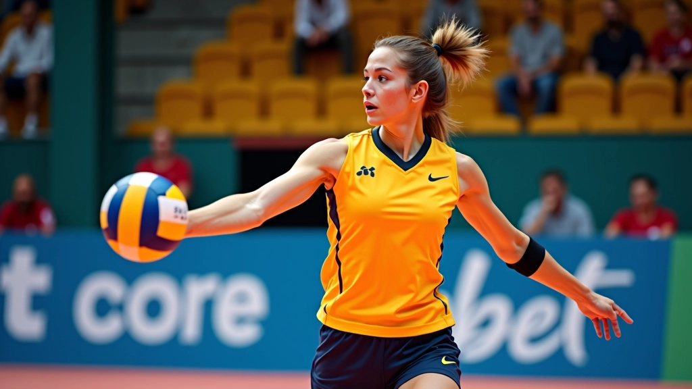
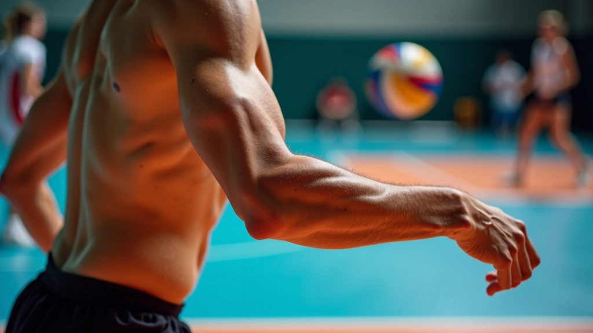
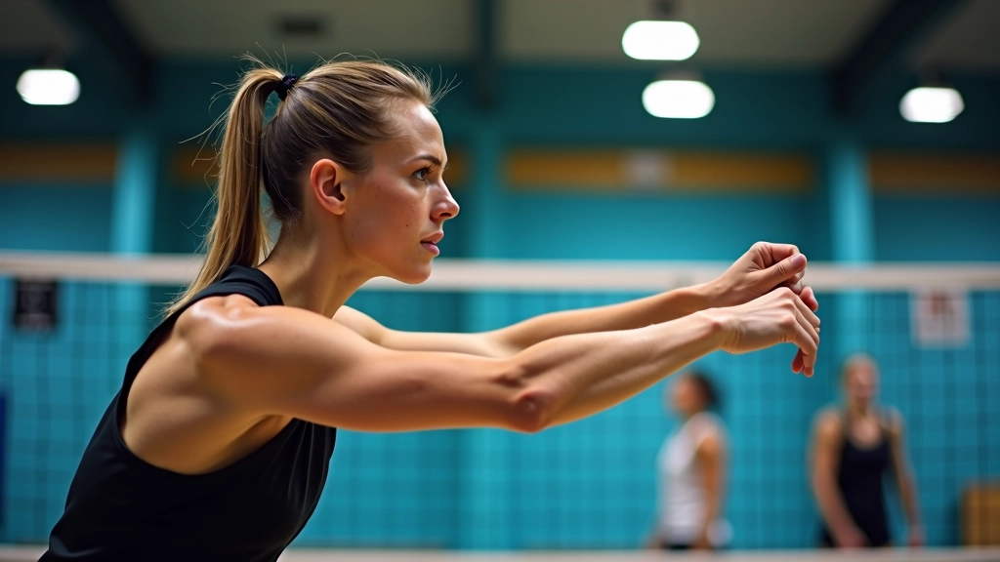
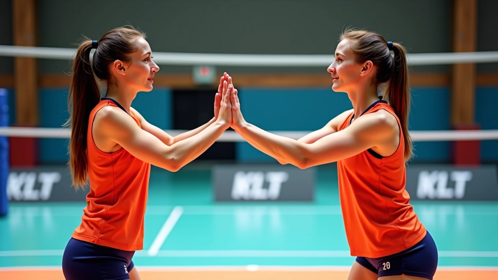

تحسين سرعة القفزة والارتفاع
تمارين متخصصة لزيادة قوة الساقين والقدرة على القفز العالي بشكل متكرر دون إرهاق.
اقرأ المزيدشرح تفصيلي لحركة الذراع والمعصم التي تزيد من دقة الضربة وقوتها مع تقليل الإصابات. تعلم الأساسيات من خبراء مختصين وطبق التقنيات بثقة.

لاعب الوسط يحتاج إلى ضربة سريعة ودقيقة في نفس الوقت. المشكلة أنّ معظم اللاعبين يركزون على القوة فقط ويهملون تقنية الذراع. النتيجة؟ ضربات عشوائية وإصابات في الكتف والمعصم.
الحقيقة أنّ التقنية الصحيحة توفر لك ثلاث أشياء: أولاً، دقة عالية في التوجيه. ثانياً، قوة أكثر بجهد أقل. ثالثاً، حماية من الإصابات المتكررة.

معظم اللاعبين يرفعون ذراعهم بزاوية خاطئة قبل الضربة. هذا يؤدي إلى فقدان التوازن وقوة أقل. الزاوية الصحيحة يجب أن تكون 90 درجة تقريباً بين الذراع العليا والساعد.

الخطوة الأولى هي التحضير. ذراعك تكون مرفوعة بشكل طبيعي بجانب رأسك، والمرفق يشير للأمام قليلاً. من هنا نبدأ الحركة الصحيحة.
في الخطوة الثانية، تحرك الذراع للأمام بحركة سلسة وسريعة. المعصم يجب أن يكون مرناً وليس متصلباً. هذا هو السر. كثير من اللاعبين يشدون معصمهم مما يقلل السرعة والدقة معاً.
الخطوة الثالثة هي التأثير. عند ملامسة الكرة، تكون أصابعك مفتوحة قليلاً وليس مقبوضة. هذا يعطيك تحكماً أفضل. المتابعة مهمة جداً — لا تتوقف الحركة فوراً بعد الضربة.
هذا المحتوى معلومات تعليمية عامة حول تقنية الهجوم السريع. كل لاعب له احتياجات مختلفة حسب طوله وقوته والأسلوب الخاص به. من الأفضل العمل مع مدرب مختص يراقب حركتك شخصياً ويعطيك تصحيحات دقيقة.
الآن تعرفت على التقنية، الوقت جاء للتطبيق العملي. أنت تحتاج إلى تكرار الحركة مراراً وتكراراً حتى تصبح طبيعية. ليس هناك اختصار في هذا الموضوع.
قف أمام المرآة وحاول الوصول للوضعية الصحيحة. افعل هذا 20 مرة يومياً لمدة أسبوع. ستشعر أن جسمك يتعود على الحركة.
ابدأ بضرب الكرة ببطء من مسافة قريبة. زيادة السرعة تدريجياً. الهدف أن تشعر بالحركة الصحيحة قبل أن تزيد السرعة.
مارس التمرينات 3 مرات أسبوعياً على الأقل. كل جلسة 30 دقيقة تركيز على التقنية وليس العدد. الجودة أهم من الكمية هنا.


لا تنسَ أن قوة الضربة لا تأتي من الذراع وحدها. أنت تحتاج إلى قوة من الأرجل والجذع. التقنية تربط كل هذا معاً بشكل متناسق.
تقنية الذراع الصحيحة ليست معقدة، لكنها تحتاج إلى تركيز وتكرار. ابدأ ببطء، افهم الحركة، ثم زد السرعة. الجودة أولاً، السرعة ستأتي من نفسها.
المفتاح هو الممارسة المستمرة والانتباه لتفاصيل الحركة. إذا شعرت بألم في الكتف أو المعصم، توقف وراجع التقنية. الألم إشارة على خطأ ما.
ابدأ بالتمارين اليوم واشعر بالفرق. لا تتردد في طلب مساعدة مدرب إذا احتجت توجيهاً شخصياً.
تواصل معنا للحصول على استشارةاكتشف مزيداً من التقنيات والتمارين لتحسين أدائك
تمارين متخصصة لزيادة قوة الساقين والقدرة على القفز العالي بشكل متكرر دون إرهاق.
اقرأ المزيد
تمارين عملية لمزامنة حركتك مع توقيت وصول الكرة من المُوزِّع بدقة عالية.
اقرأ المزيد
تعلم كيفية تحليل تشكيلة الدفاع الخصم واختيار نوع الهجوم السريع الأنسب في كل موقف.
اقرأ المزيد